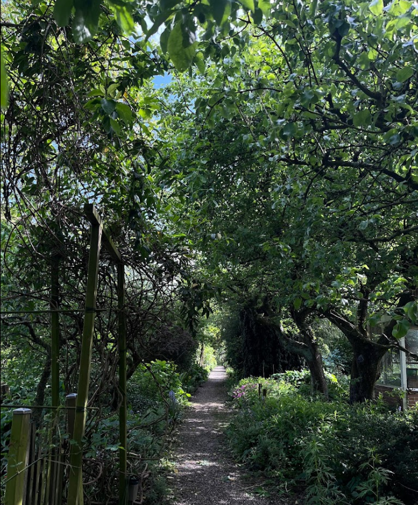

Ontdek de ultieme groene schat van Amsterdam - dé beste moestuin die de stad te bieden heeft. Hier delen we waarom deze plek zo bijzonder is, van de variëteit aan gewassen tot de gemeenschapsgeest die er heerst. Laat je inspireren om deze plekken te bezoeken en te genieten van alles wat de beste moestuin van Amsterdam te bieden heeft.
En de beste moestuin is.....
De Vink Schooltuin is voor mij niet zomaar een stukje groen in Amsterdam; het is als een toverland voor kinderen waar ik zelf ook graag had willen tuinieren als klein kind. Mijn keuze voor de Vink Schooltuin als mijn favoriet komt voort uit de warme herinneringen die het oproept aan een tijd waarin alles nog simpel en puur was.
Wat deze tuin zo bijzonder maakt, is het idee dat kleine kinderen hier leren hoe het is om met planten en bloemen om te gaan. Ik stel me voor hoe kleine handjes vol enthousiasme zaadjes planten en met spanning wachten tot er iets groens uit de grond piept. Het is niet alleen leren over planten; het is zelf opgroeien te midden van groeiende planten, als onderdeel van de natuur.
Wat ik extra mooi vind aan de Vink Schooltuin is dat het niet zomaar een tuin is, maar een plek waar kinderen de natuur ontdekken en er ook nog eens goed voor leren zorgen. Hier gaat het niet alleen om het laten groeien van bloemen en groenten, maar ook om het laten groeien van de kinderen zelf. Het is alsof ze spelenderwijs leren over het leven, verantwoordelijkheid nemen en samenwerken.
In deze tuin ervaar ik meer dan alleen planten; ik ervaar de belofte van een toekomst waarin kinderen opgroeien met liefde voor de natuur. De Vink Schooltuin heeft iets magisch, iets wat blijvende indrukken achterlaat en een glimlach op het gezicht tovert. Het is een plek waar eenvoudige dingen zoals zaaien en oogsten een groot avontuur worden, een avontuur dat de harten van jonge tuiniers raakt en verandert.